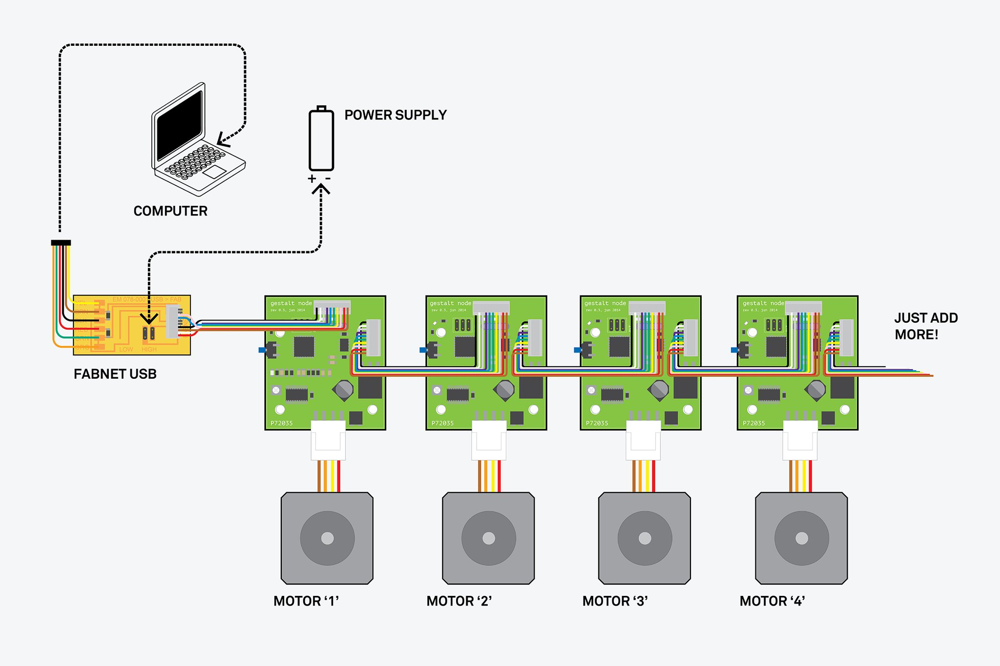
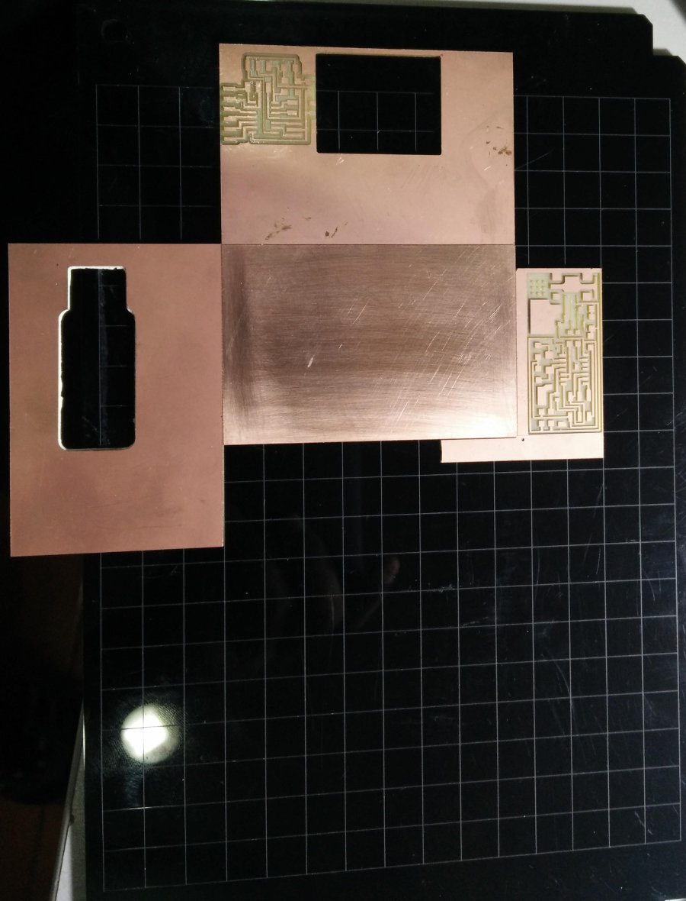
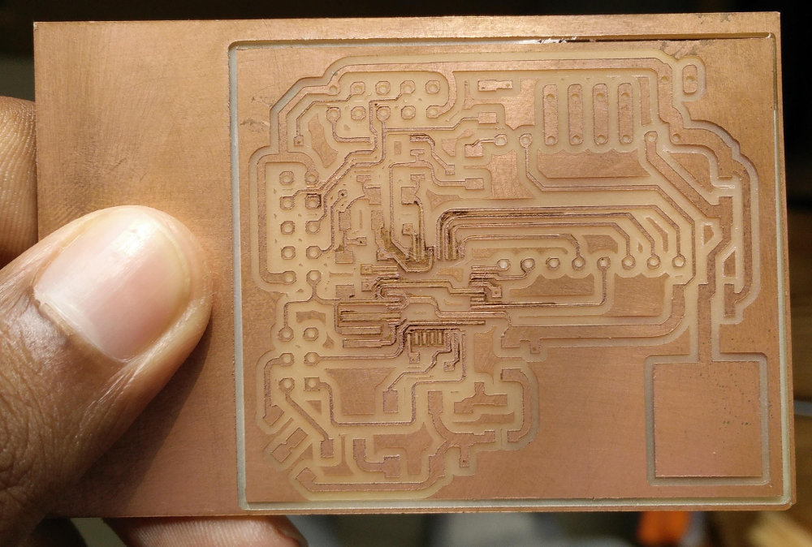
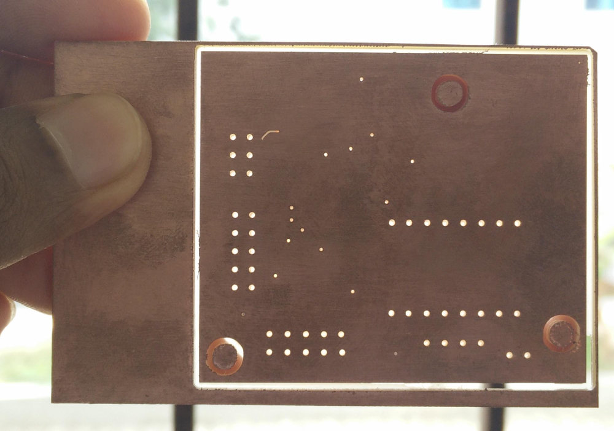

Before you begin, this page is not about the machine design. Since the last module and this one is essentially the part of same goal, I have documented everything in the
Mechanical Design module.
I'm using this page to document my experience of trying to make my own version of gestalt stepper controller and milling double sided board. I'll also be using this page for documenting my experience with other
controllers, especially networked controllers.
Gestalt Node
For the machine week, we are recommended to use modular design, reconfigurable X,Y and Z stages. So it's better to use modular electronics too. Our instructor Francisco asked me to
take a look at the Gestalt Stepper Driver/Gestalt Node. He asked me to go through
mtm.cba.mit.edu/machines/stages
page and the
github page. Later I found a few other useful resources and articles
An
Hackaday article which links to
this wonderful page.

Gestalt nodes as Stepper drivers for a single Stepper/Axis.
The Gestalt node is a single stepper driver that is controlled by the PC. All the commands to the motor, how many steps to move in what direction is sent from the PC via an USB to RS-485
converter. The individual nodes can be then daisy chained to a bus that connects them to the RS-485 lines and the power for the motor and the board as well as few other signals.
Modified Gestalt Node
These boards are required to make a fully module stages. Or it can be something similar, a networked stepper controller like our instructors used for his final project
FAB 9000. Anyway I accepted his challenge to make the Gestalt node in-house, because buying them will cost about $500/- as per our instructor. But the BOM will cost much less
than that, but there are few problems some of the components are not a part of the FabLab inventory or some components like the Stepper driver A4982 is not so common is India,
but we get A4988 as breakout boards and they are very cheap. Fortunately I have a several of these breakout boards with me.
I also thought about replacing the RS-484 with some easily available and familiar serial protocol, but decided not to, as RS-485 is using a differential pair and capable of long ranges
(upto 1200m) and high speed (a few Mbits/s) communication, it also supports several devices in a single daisy chain.
So I decided to redesign the Gestalt node mainly to use A4988 breakout. Other differences includes the modifications on on the pads and spacings so that it can be milled in MDX-20 mill.
The A4982 and several components associated will be replaced by A4988 breakout connector
Some of the passive components packages has been changed from smaller 0805 to 1206.
The pads of the connectors has been elongated so that they won't be too thin after milling, else they will come out while milling, placing the component, cleaning or while soldering.
Thicker traces for Motor Power Bus.
A4988 is capable of 1/16 micro-stepping, so I used an extra Digital PIN from the Micro-Controller.
This was teh first time I'm doing a double sided board, and nobody here at the lab had the experience of making the double sided board. My initial designs were supposed to be milled
with 1/100", in some areas. But that bit is too fragile, event the slightest misalignment (in the leveling), or the flexible nature of the Acrylic workpiece holder was sufficient
to break the bit. I had two failed attempt with 1/100".
First time I could mill one side of the board completely and the bit broke when I started milling the second side, I guess it happened because the rough edges on the other surface
might have disturbed the leveling. Another possible reason could be that I milled the entire board out of 1/100" bit, the bit clearly is not made for such heavy duty.
Second time everything was going perfectly and I used the bit to mill only some small sections where the spacing between the traces/pads are too narrow for the 1/64". So I milled
the board using 1/64" first and then moved on to 1/100" for some specific areas. But it failed this time too, during the transition from the cutting zone to an area which
was already milled by the 1/64". I cannot find a proper reason for this, though a foolish guess could be that the bit broke when the horizontal load on the bit disappeared
suddenly and the it caused the bit to release all the spring energy at once and broke it.
Anyway I didn't want to experiment more with this expensive fragile 1/100" bit, my final project is anyway an EDM based PCB mill, which in theory could do better than what this
machine can do.
Here are the few failed attempts and few test pieces.

The alignment guides. The three boards were stuck to the base and helps in precisely aligning the workpiece.

The top side of the board. This side of the board was entirely milled using 1/100", bad idea, but this side came out nicely.

The bottom side with the vias and holes drilled. The milling of this side is incomplete as the bit broke. But you can see that the holes are perfectly aligned. The holes are
drilled from both the sides, that is, the holes were drilled halfway from one side and other half from the other side. The PCB is actually 1.7mm thick so I only drill .8mm
from one side, leaving a thin .1mm section in between.
I have refined my design a lot from what is seen above and tuned the board so that it can be milled using 1/64" board, bit at the cost of a few thinner traces (not a big deal) and few
extra vias to be milled and soldered. The downloadable eagle files are of the final design.